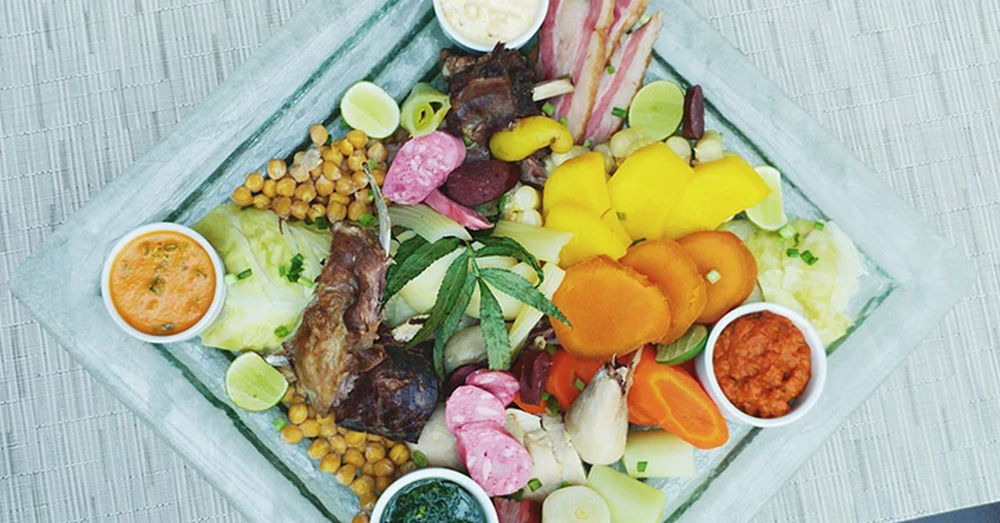

Miercoles de Sancochado - Hotel Los Delfines
29/07/2019, Lima, Perú El sancochado es un plato producto de la fusión del timpo (sopa andina) y el cocido madrileño; muy particular entre los limeños e ideal para combatir el frío y contundente para reparar el cuerpo. Esta sopa compuesta de infinidad de carnes, tubérculos (papas, camotes, yucas), verduras y menestras, siempre viene acompañada de diversas salsas entre las cuales no puede faltar la exquisita sarsa criolla.
Desde hace unos años, en el Delfines Hotel & Convention Center es tradición presentarlo en su versión buffet durante la temporada de invierno y este año no será la excepción ya que estará presente todos los Miércoles desde la 1:00pm a 4:00pm en las instalaciones del moderno restaurante Delphos Bistró.
En los “miércoles de sancochado”, el chef Nilo Do Carmo y su equipo, preparará una diversidad de carnes como la malaya, el pollo, el costillar, la lengua, el pecho de cerdo, la panceta, entre otras más, para deleitar el paladar de los comensales. Estas carnes podrán combinarlas a su elección con legumbres como los garbanzos, embutidos y verduras como el apio, poro, zanahorias, nabo, col y choclos.
Además, podrá degustar de una variedad de salsas con sabores peruanos e internaciones, así podrá acompañar las carnes de este popular platillo, con la clásica salsa de huacatay, la huancaína, el chimichurri, la ocopa, el ajíoli, y otras más. Asimismo, tendrá a su disposición un completo salad bar y una deliciosa mesa de postres.
El precio es de S/ 79.00 por persona y si desean solicitar mayor información sobre el buffet de “miércoles de sancochado”, pueden comunicarse al 215-7000
Hasta el próximo miércoles de sancochado!
Los Placeres Culinarios
¡Los esperamos!